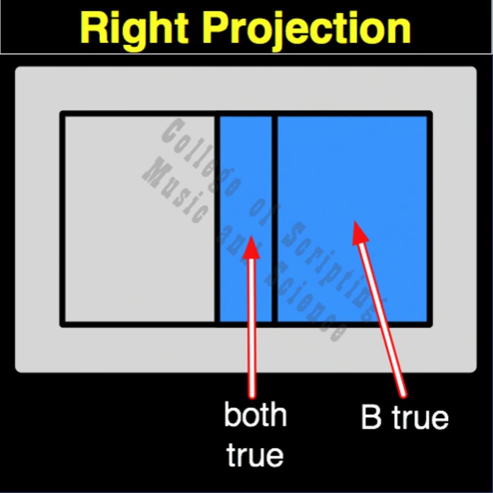

| RP | |
|---|---|
| 0 + 0 | = 0 |
| 0 + 1 | = 1 |
| 1 + 0 | = 0 |
| 1 + 1 | = 1 |

In the ethical architecture of Starfleet, Right Projection (RP) represents the Sovereign Ego and the absolute isolation of personal will. While LP adheres strictly to the foundational directive, RP flips the focus entirely to the individual. It mathematically proves a state where a crew member or system (Input B) completely ignores external authority or overarching commands (Input A). If the individual chooses to act (1), the output is action (1), regardless of whether authority commanded it (1) or forbade it (0). It teaches cadets the profound nature of personal agency: the ultimate choice to act always rests with the individual.
| RP Gate FLIPPED to make RC Gate | |
|---|---|
| 0 + 0 = 0 | FLIPPED becomes 1 |
| 0 + 1 = 1 | FLIPPED becomes 0 |
| 1 + 0 = 0 | FLIPPED becomes 1 |
| 1 + 1 = 1 | FLIPPED becomes 0 |
RP is the OPPOSITE of RC (Right Complementation).
RP completely ignores Input A. The output is always exactly equal to Input B.
Because it is a Pillar of Identity, RP is incredibly resilient: It is a Self-Dual gate.
// gateRp.js
function gateRp(a, b)
{
// The system acts purely on individual will (Input B), completely ignoring external authority (Input A).
if (b == 1)
{
return 1; // The individual chooses to act
}
else
{
return 0; // The individual chooses to rest
}
}
//----//
/*
RP
0101
A B
0 0 = 0
0 1 = 1
1 0 = 0
1 1 = 1
Opposite: RC
*/